Under CNDO, only the valence electrons are considered explicitly.
Interactions between electrons on the same atom are handled simply.
Since the atomic orbital basis is built from orthonormal atomic
functions, then the interaction between different orbitals  and
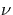, 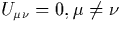, due to their symmetry. The
core Hamiltonian elements, 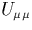, are fitted to experiment. In
CNDO/1 these were fitted to atomic ionisation energies, but in CNDO/2
this was modified by fitting to the average of the ionisation
potential and electron affinity, making the system more applicable to
both electron gain and loss.
and
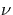, 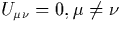, due to their symmetry. The
core Hamiltonian elements, 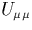, are fitted to experiment. In
CNDO/1 these were fitted to atomic ionisation energies, but in CNDO/2
this was modified by fitting to the average of the ionisation
potential and electron affinity, making the system more applicable to
both electron gain and loss.
In order to overcome the basis dependency of the ZDOA, the remaining two-centre integrals only depend on their host atoms and not on the orbital type. This is achieved by using an average electrostatic repulsion on any atom A caused by atom B, 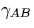 (the `electron repulsion integral'), so that
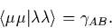
In CNDO/1, is approximated by s-orbital integrals on the atoms,
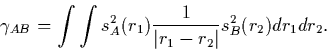
Similarly if the core potential (consisting of the nucleus and core electrons) on an atom B is 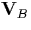 then to maintain rotational invariance, the interaction between an electron on atom A and this core on atom B must be a constant, VAB (the `potential integrals').
Similarly to , in CNDO/1 VAB is calculated using an s-orbital on atom A:
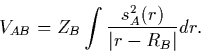
In CNDO/2, an improved parameterisation, this was replaced with a simple approximation, 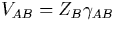.
The lack of monatomic differential overlap removes all terms of the form
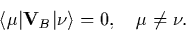
Next the interaction between an electron and the field of two atoms,
A and B is simplified (the `resonance integral',
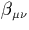)![[*]](foot_motif.gif) , by setting it proportional to the overlap integral,
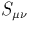,
, by setting it proportional to the overlap integral,
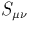,
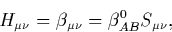
where 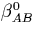 are known as the bonding parameters and are dependent on the atom types A and B. Under CNDO/1 these are approximated to 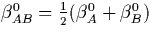,and 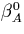 is fitted to ab initio calculations for each species.
The precise parameterisation technique used to determine ,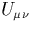, VAB, and varies. Although I have described the method used for CNDO/1 and CNDO/2 (the earliest parameterisations), there have been many refinements to these since. CNDO is extremely fast, and this has meant that when computing resources were limited, CNDO calculations have been able to perform pioneering calculations on system sizes inaccessible to their ab initio cousins. Much of the accuracy lost during the above simplifications is compensated for by the use of parameterisation to experimental and ab initio results. Although CNDO is not as accurate as ab initio methods such as AIMPRO it remains a useful investigative tool in semiconductor calculations, and a valuable intermediate between empirical potentials and full ab initio calculations.